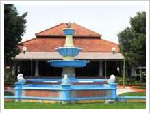

Jauh sebelum adanya kerajaan-kerajaan ditanah jawa. Diujung sebelah utara pulau Jawa sudah ada sekelompok penduduk yang diyakini orang-orang itu berasal dari daerah Yunnan Selatan yang kala itu melakukan migrasi ke arah selatan. Jepara saat itu masih terpisah oleh selat Juwana. Asal nama Jepara berasal dari perkataan Ujung Para, Ujung Mara dan Jumpara yang kemudian menjadi Jepara, yang berarti sebuah tempat pemukiman para pedagang yang berniaga ke berbagai daerah.
Penetapan Hari Jadi Jepara yang mengambil waktu beliau dinobatkan sebagai penguasa Jepara atau yang bertepatan dengan tanggal 10 April 1549 ini telah ditandai dengan Candra Sengkala TRUS KARYA TATANING BUMI atau terus bekerja keras membangun daerah. Untuk Tahun 2010 ini, Jepara telah mendapatkan sertifikasi Indikasi Geografis terhadap produk Ukirnya yang sangat khas